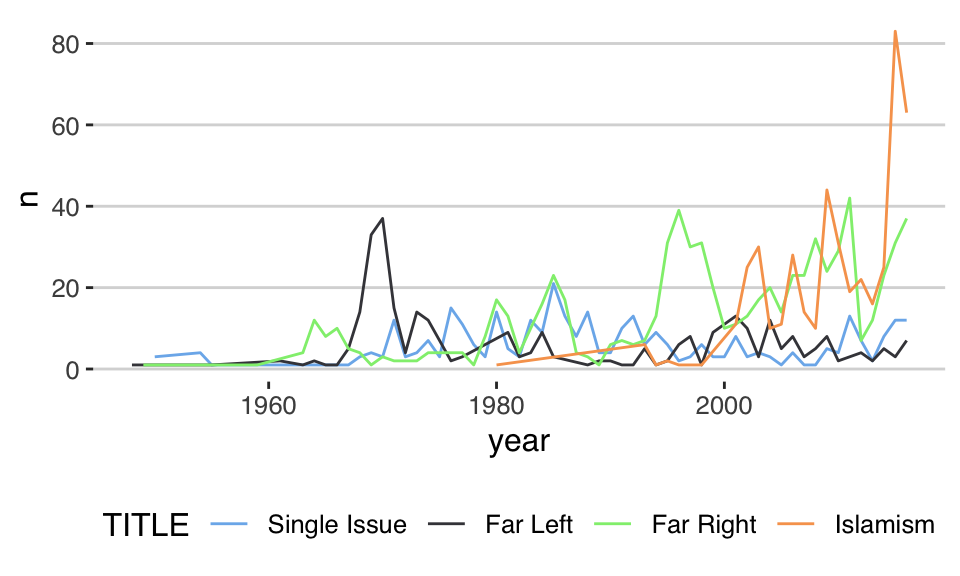
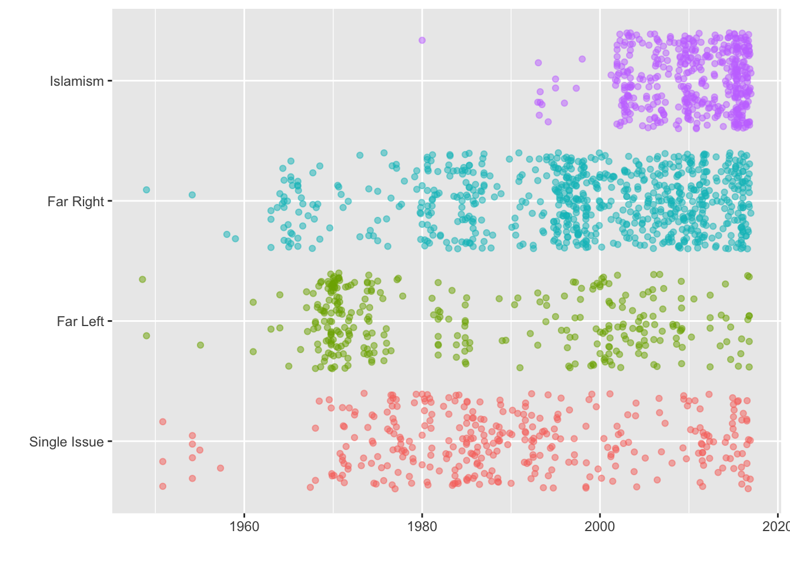
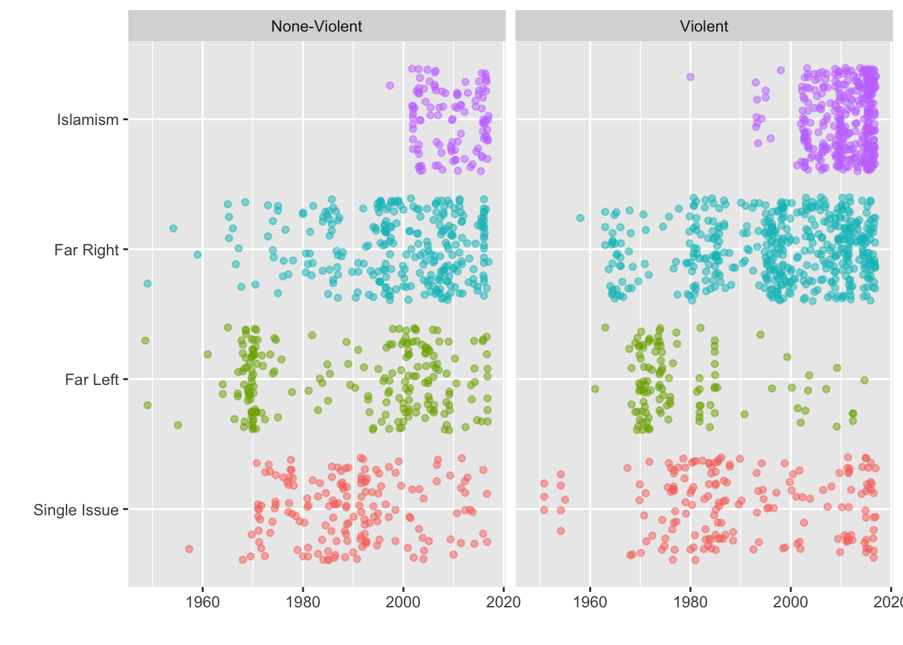

Chapter 4 Plots with ggplot2

4.1 Zwei Funktionen von Datenvisualisierungen
“The simple graph has brought more information to the data analyst’s mind than any other device.” — John Tukey
- unterschied Exploratory Data Viz vs. Publication Ready Data Viz
Additional Sources
4.2 Grammar of Graphics
- A grammar of a language defines the rules of structuring words and phrases into meaningful expressions.
- A grammar of graphics defines the rules of structuring mathematic and aesthetic elements into a meaningful graph.
- allows the user to build a graph from concepts rather than recall of commands and options.
Leland Wilkinson (2005) designed the grammar upon which ggplot2 is based.


4.3 Die Evolution einer Grafik
Klicke schrittweise auf die Tabs um den Aufbau einer Grafik angefangen bei den Daten zu verdeutlichen.
start_pirusAm Anfang steht bei ggplot immer ein Dataframe. Idealerweise wurden alle Datentransformationen bereits vor der Erstellung des Plots durchgeführt. Wenn ein Plot mal nicht funktioniert wird in 95% der Fälle etwas mit den Daten oder deren Format nicht stimmen. Deshalb ist es wichtig die Daten und deren Struktur zu verstehen.
## Observations: 5
## Variables: 18
## $ subject_id <dbl> 1000, 1001, 1002, 1005, 1006
## $ date <date> 2002-05-08, 2001-11-25, 1997-05-01, 1993-04-10, …
## $ age <dbl> 32, 20, 28, 25, 25
## $ male <dbl> 1, 1, 1, 1, 1
## $ gender <dbl> 2, 2, 2, 2, 2
## $ married <dbl> 1, 0, 1, 1, 0
## $ student <dbl> 1, 1, 0, 0, 0
## $ unemployed <dbl> 0, 0, 0, 0, 0
## $ mental <dbl> 0, 0, 0, 0, 0
## $ abuse_child <dbl> 0, 0, 0, 0, 0
## $ crime_history <fct> Violent, None, Violent, None, NA
## $ violent <chr> "Violent", "None-Violent", "None-Violent", "Viole…
## $ extent <dbl> 2, 0, NA, 5, 5
## $ terror_group <chr> "al-Qaeda core", "Taliban", "al-Qaeda core", NA, …
## $ radicalization <dbl> 4, 5, 5, 5, 5
## $ clique <dbl> 1, 1, 1, 1, 1
## $ terror_type <fct> Islamism, Islamism, Islamism, Islamism, Islamism
## $ year <dbl> 2002, 2001, 1997, 1993, 1993start_pirus %>%
ggplot()Durch die Funktion ggplot() wird das Layout der Grafik initialisiert. Noch sind keine weiteren Informationen spezifiziert (Note: nicht ggplot2, der Name des packages).
start_pirus %>%
ggplot() +
aes(x = terror_type)Die Funktion aes() definiert welche Variablen für welche Achsen spezifiziert werden. aes() hat viele weitere Parameter (Optionen):
- x: positioning along x-axis
- y: positioning along y-axis
- color: color of objects; for 2-d objects, the color of the object’s outline (compare to fill below)
- fill: fill color of objects
- alpha: transparency of objects
- lineterror_type: how lines should be drawn (solid, dashed, dotted, etc.)
- shape: shape of markers in scatter plots
- size: how large objects appear
start_pirus %>%
ggplot() +
aes(x = terror_type) +
geom_bar()Es gibt unzählige geom_ Funktionen welche für die Datendarstellung verantwortlich sind und ein eine bestimmtes Datenformat erwarten.
start_pirus %>%
ggplot() +
aes(x = terror_type, fill = terror_type) +
geom_bar()Es gibt zwei Farb-parameter fill und colour. fill wird verwendet um Flächen zu kolorieren und colour um Lines (Outlines) und Points einzufärben.
start_pirus %>%
ggplot() +
aes(x = terror_type, fill = terror_type) +
geom_bar(alpha = .7)Mit alpha wird die Intensität der Farbe eingestellt. 0 bedeutet komplett durchsichtig; 1 volle Sättigung.

start_pirus %>%
ggplot() +
aes(x = terror_type, fill = terror_type) +
geom_bar(alpha = .7) +
labs(x = "Terror Types", y = "Frequency", title = "Frequency by Terror Type") Die Lables an einem Plot dürfen natürlich nicht fehlen.
start_pirus %>%
ggplot() +
aes(x = terror_type, fill = terror_type) +
geom_bar(alpha = .7) +
labs(x = "Terror Types", y = "Frequency", title = "Frequency by Terror Type") +
facet_wrap(~violent)Mit facet_wrap kann ein Plot über mehrere Dimensionen aufgefächert werden.
start_pirus %>%
ggplot() +
aes(x = terror_type, fill = terror_type) +
geom_bar(alpha = .7) +
labs(x = "", y = "Frequency", title = "Frequency by Terror Type") +
facet_wrap(~violent) +
theme_classic() +
theme(legend.position = "bottom")Mit facet_wrap kann ein Plot über mehrere Dimensionen aufgefächert werden.

4.4 Welche Geoms gibts es?
geom_<type>
geoms_list <- help.search("geom_", package = "ggplot2")
geoms_list$matches %>%
select(Topic, Title) %>%
slice(1:10)4.5 Farben
- colourpicker -> Addin
4.6 Plot Theming
start_pirus %>%
ggplot() +
aes(x = terror_type, fill = terror_type) +
geom_bar(alpha = .7) start_pirus %>%
count(year, terror_type) %>%
ggplot(aes(year, n, colour = terror_type)) +
geom_line()start_pirus %>%
ggplot() +
aes(x = terror_type, fill = terror_type) +
geom_bar(alpha = .7) +
scale_fill_grey("TITLE") +
theme_bw()start_pirus %>%
count(year, terror_type) %>%
ggplot(aes(year, n, colour = terror_type)) +
geom_line() +
scale_colour_grey("TITLE") +
theme_bw()
library(ggthemes)
start_pirus %>%
ggplot() +
aes(x = terror_type, fill = terror_type) +
geom_bar(alpha = .7) +
scale_fill_hc(name = "TITLE") +
theme_hc()library(ggthemes)
start_pirus %>%
count(year, terror_type) %>%
ggplot(aes(year, n, colour = terror_type)) +
geom_line() +
scale_colour_hc(name = "TITLE") +
theme_hc()
library(ggthemes)
start_pirus %>%
ggplot() +
aes(x = terror_type, fill = terror_type) +
geom_bar(alpha = .7) +
scale_fill_gdocs(name = "TITLE") +
theme_gdocs()library(ggthemes)
start_pirus %>%
count(year, terror_type) %>%
ggplot(aes(year, n, colour = terror_type)) +
geom_line() +
scale_colour_gdocs(name = "TITLE") +
theme_gdocs()
4.7 Some Informative Plots
start_pirus %>%
ggplot(aes(date, terror_type, colour = terror_type)) +
geom_jitter(alpha = .5) +
theme(legend.position = "none") +
labs(x = "", y = "")
start_pirus %>%
ggplot(aes(date, terror_type, colour = terror_type)) +
geom_jitter(alpha = .5) +
theme(legend.position = "none") +
labs(x = "", y = "") +
facet_wrap(~violent)
start_pirus %>%
mutate(year = lubridate::year(date)) %>%
count(year, violent) %>%
ggplot(aes(year, n, colour = violent)) +
geom_line()start_pirus %>%
count(year, terror_type) %>%
ggplot(aes(year, n, colour = terror_type)) +
geom_line()